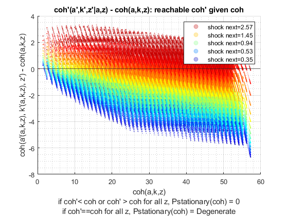
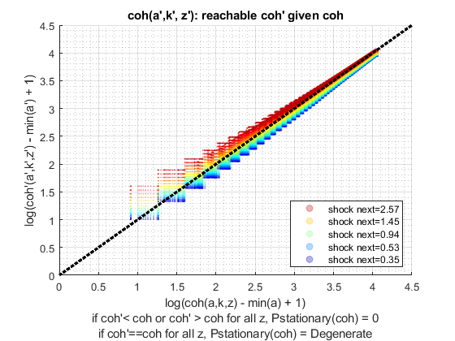

Derive Two Asset (Risky + Safe) and Choices/Outcomes Distribution (Vectorized)
back to Fan's Dynamic Assets Repository Table of Content.
This uses ff_az_ds_vec, which works for single and multiple assets.
The function here works with both ff_akz_vf_vecsv as well as ff_wkz_vf_vecsv. Results are identical, but ff_wkz_vf_vecsv is significantly faster.
@include
@seealso
- derive distribution f(y'(y,z)) one asset loop: ff_az_ds
- derive distribution f(y'({x,y},z)) two assets loop: ff_akz_ds
- derive distribution f(y'({x,y},z, z')) two assets loop: ff_iwkz_ds
- derive distribution f(y'({y},z)) or f(y'({x,y},z)) vectorized: ff_az_ds_vec
- derive distribution f(y'({y},z, z')) or f(y'({x,y},z, z')) vectorized: ff_iwkz_ds_vec
- derive distribution f(y'({y},z)) or f(y'({x,y},z)) semi-analytical: ff_az_ds_vecsv
- derive distribution f(y'({y},z, z')) or f(y'({x,y},z, z')) semi-analytical: ff_iwkz_ds_vecsv
Contents
Set Parameters Main
Options for Distribution solutions
- it_subset = 5 is basic invoke quick test
- it_subset = 6 is invoke full test
- it_subset = 7 is profiling invoke
- it_subset = 8 is matlab publish
- it_subset = 9 is invoke operational (only final stats) and coh graph
close all; clear all; it_param_set = 8; st_akz_or_wkz = 'wkz';
Get Parameters
Note that akz and wkz share the smae funcgrid and default_param functions
% Set Parameters [param_map, support_map] = ffs_akz_set_default_param(it_param_set); support_map('bl_profile_dist') = false; % Call Grid Generator <https://fanwangecon.github.io/CodeDynaAsset/m_akz/paramfunc/html/ffs_akz_get_funcgrid.html ffs_akz_get_funcgrid> [armt_map, func_map] = ffs_akz_get_funcgrid(param_map, support_map); % 1 for override
Alternative 1: Solving the Dynamic Programming Problem (AKZ)
if (strcmp(st_akz_or_wkz, 'akz')) result_map = ff_akz_vf_vecsv(param_map, support_map, armt_map, func_map); end
Alternative 2: Solving the Dynamic Programming Problem (AWZ)
if (strcmp(st_akz_or_wkz, 'wkz')) result_map = ff_wkz_vf_vecsv(param_map, support_map, armt_map, func_map); end 
Distribution Start Profiler and Timer
% Start Profiling if (it_param_set == 7) profile off; profile on; end % Start Timer if (support_map('bl_time')) tic; end % Get Profile name st_profile_name_main = support_map('st_profile_name_main');
Derive Distribution
% Call Distribution Program <https://fanwangecon.github.io/CodeDynaAsset/m_az/solve/html/ff_az_ds_vec.html ff_az_ds_vec>
result_map = ff_az_ds_vec(param_map, support_map, armt_map, func_map, result_map);
----------------------------------------
xxxxxxxxxxxxxxxxxxxxxxxxxxxxxxxxxxxxxxxx
Summary Statistics for: cl_mt_pol_coh
xxxxxxxxxxxxxxxxxxxxxxxxxxxxxxxxxxxxxxxx
----------------------------------------
fl_choice_mean
6.6378
fl_choice_sd
3.2117
fl_choice_coefofvar
0.4838
fl_choice_prob_zero
0
fl_choice_prob_below_zero
0
fl_choice_prob_above_zero
1.0000
fl_choice_prob_max
0
tb_disc_cumu
cl_mt_pol_cohDiscreteVal cl_mt_pol_cohDiscreteValProbMass CDF cumsumFrac
________________________ ________________________________ ________ __________
0.44365 0.00078431 0.078431 5.2421e-05
1.4896 0 0.078431 5.2421e-05
1.7324 1.3347e-10 0.078431 5.2421e-05
1.7861 3.2488e-10 0.078431 5.2421e-05
1.8481 8.1664e-10 0.078432 5.2421e-05
1.9196 1.6823e-09 0.078432 5.2421e-05
2.0021 2.8547e-09 0.078432 5.2422e-05
2.0973 3.9661e-09 0.078432 5.2424e-05
2.207 4.446e-09 0.078433 5.2425e-05
2.3337 3.9182e-09 0.078433 5.2426e-05
cl_mt_pol_cohDiscreteVal cl_mt_pol_cohDiscreteValProbMass CDF cumsumFrac
________________________ ________________________________ ___ __________
57.254 0 100 1
57.254 0 100 1
57.262 0 100 1
57.264 0 100 1
57.269 0 100 1
57.271 0 100 1
57.274 0 100 1
57.275 0 100 1
57.277 0 100 1
57.277 0 100 1
tb_prob_drv
percentiles cl_mt_pol_cohDiscreteValPercentileValues fracOfSumHeldBelowThisPercentile
___________ ________________________________________ ________________________________
0.1 2.7703 0.00075046
1 2.9189 0.0046305
5 3.3795 0.03197
10 3.9458 0.053693
15 4.1803 0.098284
20 4.3216 0.13576
25 4.4846 0.17805
35 4.6727 0.21843
50 5.557 0.3322
65 6.8355 0.47334
75 7.8814 0.58557
80 8.4891 0.65283
85 9.5307 0.71365
90 10.63 0.78803
95 13.177 0.87786
99 18.291 0.96894
99.9 24.692 0.99598
----------------------------------------
xxxxxxxxxxxxxxxxxxxxxxxxxxxxxxxxxxxxxxxx
Summary Statistics for: cl_mt_pol_a
xxxxxxxxxxxxxxxxxxxxxxxxxxxxxxxxxxxxxxxx
----------------------------------------
fl_choice_mean
0.3116
fl_choice_sd
1.1459
fl_choice_coefofvar
3.6775
fl_choice_prob_zero
0.8815
fl_choice_prob_below_zero
0
fl_choice_prob_above_zero
0.1185
fl_choice_prob_max
0
tb_disc_cumu
cl_mt_pol_aDiscreteVal cl_mt_pol_aDiscreteValProbMass CDF cumsumFrac
______________________ ______________________________ ______ __________
0 0.88152 88.152 0
1.0204 0.0046027 88.612 0.015073
1.0204 0.03178 91.79 0.11915
1.0204 0.0025706 92.047 0.12757
1.0204 0.011357 93.183 0.16476
1.0204 2.2776e-05 93.185 0.16483
2.0408 5.4136e-05 93.191 0.16519
2.0408 0.009004 94.091 0.22416
2.0408 0.0016919 94.26 0.23524
2.0408 0.0158 95.84 0.33873
cl_mt_pol_aDiscreteVal cl_mt_pol_aDiscreteValProbMass CDF cumsumFrac
______________________ ______________________________ ___ __________
38.776 2.2065e-11 100 1
39.796 7.7778e-12 100 1
39.796 2.2972e-12 100 1
40.816 2.2706e-12 100 1
41.837 5.1456e-14 100 1
41.837 1.8174e-13 100 1
42.857 6.9732e-16 100 1
42.857 5.6187e-18 100 1
43.878 6.3289e-19 100 1
44.898 0 100 1
tb_prob_drv
percentiles cl_mt_pol_aDiscreteValPercentileValues fracOfSumHeldBelowThisPercentile
___________ ______________________________________ ________________________________
0.1 0 0
1 0 0
5 0 0
10 0 0
15 0 0
20 0 0
25 0 0
35 0 0
50 0 0
65 0 0
75 0 0
80 0 0
85 0 0
90 1.0204 0.11915
95 2.0408 0.33873
99 6.1224 0.75304
99.9 11.224 0.95765
----------------------------------------
xxxxxxxxxxxxxxxxxxxxxxxxxxxxxxxxxxxxxxxx
Summary Statistics for: cl_mt_pol_k
xxxxxxxxxxxxxxxxxxxxxxxxxxxxxxxxxxxxxxxx
----------------------------------------
fl_choice_mean
4.5080
fl_choice_sd
2.2205
fl_choice_coefofvar
0.4926
fl_choice_prob_zero
7.8431e-04
fl_choice_prob_below_zero
0
fl_choice_prob_above_zero
0.9992
fl_choice_prob_max
2.7782e-07
tb_disc_cumu
cl_mt_pol_kDiscreteVal cl_mt_pol_kDiscreteValProbMass CDF cumsumFrac
______________________ ______________________________ ________ __________
0 0.00078431 0.078431 0
1.0204 2.0755e-08 0.078433 4.698e-09
2.0408 1.4236e-11 0.078433 4.7045e-09
2.0408 8.1326e-05 0.086566 3.6822e-05
2.0408 0.10671 10.758 0.048346
2.0408 0.00011562 10.769 0.048399
2.0408 1.594e-07 10.769 0.048399
3.0612 0.00046316 10.816 0.048713
3.0612 0.33955 44.771 0.27929
3.0612 0.00085004 44.856 0.27987
cl_mt_pol_kDiscreteVal cl_mt_pol_kDiscreteValProbMass CDF cumsumFrac
______________________ ______________________________ ______ __________
14.286 0.0011993 99.658 0.98758
15.306 0.0020759 99.865 0.99463
15.306 1.4866e-06 99.866 0.99463
16.327 0.00032948 99.899 0.99583
17.347 0.00029884 99.928 0.99698
18.367 0.00050528 99.979 0.99904
19.388 5.9324e-05 99.985 0.99929
20.408 4.6963e-05 99.99 0.9995
21.429 0.00010426 100 1
22.449 2.7782e-07 100 1
tb_prob_drv
percentiles cl_mt_pol_kDiscreteValPercentileValues fracOfSumHeldBelowThisPercentile
___________ ______________________________________ ________________________________
0.1 2.0408 0.048346
1 2.0408 0.048346
5 2.0408 0.048346
10 2.0408 0.048346
15 3.0612 0.27929
20 3.0612 0.27929
25 3.0612 0.27929
35 3.0612 0.27929
50 4.0816 0.4288
65 5.102 0.61593
75 5.102 0.61593
80 6.1224 0.74117
85 6.1224 0.74117
90 7.1429 0.80373
95 9.1837 0.91265
99 12.245 0.97174
99.9 17.347 0.99698
----------------------------------------
xxxxxxxxxxxxxxxxxxxxxxxxxxxxxxxxxxxxxxxx
Summary Statistics for: cl_mt_pol_c
xxxxxxxxxxxxxxxxxxxxxxxxxxxxxxxxxxxxxxxx
----------------------------------------
fl_choice_mean
1.8182
fl_choice_sd
0.5550
fl_choice_coefofvar
0.3052
fl_choice_prob_zero
0
fl_choice_prob_below_zero
0
fl_choice_prob_above_zero
1.0000
fl_choice_prob_max
0
tb_disc_cumu
cl_mt_pol_cDiscreteVal cl_mt_pol_cDiscreteValProbMass CDF cumsumFrac
______________________ ______________________________ ________ __________
0.44365 0.00078431 0.078431 0.00019137
0.46916 0 0.078431 0.00019137
0.49467 0 0.078431 0.00019137
0.60745 1.2601e-09 0.078431 0.00019137
0.71196 1.3347e-10 0.078432 0.00019137
0.72951 0.0016725 0.24568 0.00086242
0.73747 0 0.24568 0.00086242
0.7657 3.2488e-10 0.24568 0.00086242
0.79121 0 0.24568 0.00086242
0.79848 0.0030749 0.55317 0.0022128
cl_mt_pol_cDiscreteVal cl_mt_pol_cDiscreteValProbMass CDF cumsumFrac
______________________ ______________________________ ___ __________
7.2536 0 100 1
7.2536 0 100 1
7.2624 0 100 1
7.2636 0 100 1
7.2692 0 100 1
7.2707 0 100 1
7.274 0 100 1
7.2752 0 100 1
7.2767 0 100 1
7.2772 0 100 1
tb_prob_drv
percentiles cl_mt_pol_cDiscreteValPercentileValues fracOfSumHeldBelowThisPercentile
___________ ______________________________________ ________________________________
0.1 0.72951 0.00086242
1 0.87804 0.0050293
5 0.99654 0.027155
10 1.1191 0.059227
15 1.2604 0.11019
20 1.2946 0.12438
25 1.4234 0.195
35 1.5074 0.25417
50 1.7334 0.38021
65 2.0197 0.53371
75 2.162 0.64853
80 2.295 0.71753
85 2.3829 0.77202
90 2.597 0.84228
95 2.8274 0.91558
99 3.2736 0.98017
99.9 3.9464 0.99782
OriginalVariableNames cl_mt_pol_coh cl_mt_pol_a cl_mt_pol_k cl_mt_pol_c
______________________ _____________ ___________ ___________ ___________
'mean' 6.6378 0.31159 4.508 1.8182
'sd' 3.2117 1.1459 2.2205 0.555
'coefofvar' 0.48385 3.6775 0.49256 0.30524
'min' 0.44365 0 0 0.44365
'max' 57.277 44.898 22.449 7.2772
'pYis0' 0 0.88152 0.00078431 0
'pYls0' 0 0 0 0
'pYgr0' 1 0.11848 0.99922 1
'pYisMINY' 0.00078431 0.88152 0.00078431 0.00078431
'pYisMAXY' 0 0 2.7782e-07 0
'p0_1' 2.7703 0 2.0408 0.72951
'p1' 2.9189 0 2.0408 0.87804
'p5' 3.3795 0 2.0408 0.99654
'p10' 3.9458 0 2.0408 1.1191
'p15' 4.1803 0 3.0612 1.2604
'p20' 4.3216 0 3.0612 1.2946
'p25' 4.4846 0 3.0612 1.4234
'p35' 4.6727 0 3.0612 1.5074
'p50' 5.557 0 4.0816 1.7334
'p65' 6.8355 0 5.102 2.0197
'p75' 7.8814 0 5.102 2.162
'p80' 8.4891 0 6.1224 2.295
'p85' 9.5307 0 6.1224 2.3829
'p90' 10.63 1.0204 7.1429 2.597
'p95' 13.177 2.0408 9.1837 2.8274
'p99' 18.291 6.1224 12.245 3.2736
'p99_9' 24.692 11.224 17.347 3.9464
'fl_cov_cl_mt_pol_coh' 10.315 2.269 6.5618 1.4843
'fl_cor_cl_mt_pol_coh' 1 0.61655 0.92011 0.83273
'fl_cov_cl_mt_pol_a' 2.269 1.313 0.7055 0.25051
'fl_cor_cl_mt_pol_a' 0.61655 1 0.27728 0.39391
'fl_cov_cl_mt_pol_k' 6.5618 0.7055 4.9305 0.9258
'fl_cor_cl_mt_pol_k' 0.92011 0.27728 1 0.75125
'fl_cov_cl_mt_pol_c' 1.4843 0.25051 0.9258 0.30802
'fl_cor_cl_mt_pol_c' 0.83273 0.39391 0.75125 1
'fracByP0_1' 0.00075046 0 0.048346 0.00086242
'fracByP1' 0.0046305 0 0.048346 0.0050293
'fracByP5' 0.03197 0 0.048346 0.027155
'fracByP10' 0.053693 0 0.048346 0.059227
'fracByP15' 0.098284 0 0.27929 0.11019
'fracByP20' 0.13576 0 0.27929 0.12438
'fracByP25' 0.17805 0 0.27929 0.195
'fracByP35' 0.21843 0 0.27929 0.25417
'fracByP50' 0.3322 0 0.4288 0.38021
'fracByP65' 0.47334 0 0.61593 0.53371
'fracByP75' 0.58557 0 0.61593 0.64853
'fracByP80' 0.65283 0 0.74117 0.71753
'fracByP85' 0.71365 0 0.74117 0.77202
'fracByP90' 0.78803 0.11915 0.80373 0.84228
'fracByP95' 0.87786 0.33873 0.91265 0.91558
'fracByP99' 0.96894 0.75304 0.97174 0.98017
'fracByP99_9' 0.99598 0.95765 0.99698 0.99782
End profiler and Timer
% End Timer if (support_map('bl_time')) toc; end % End Profiling if (it_param_set == 7) profile off profile viewer % append function name st_func_name = 'ff_akz_ds_vec'; support_map('st_profile_path') = [support_map('st_matimg_path_root') '/solve/profile/']; support_map('st_profile_name_main') = [st_func_name st_profile_name_main]; % support_map params_group = values(support_map, {'st_profile_path', ... 'st_profile_prefix', 'st_profile_name_main', 'st_profile_suffix'}); [st_profile_path, st_profile_prefix, st_profile_name_main, st_profile_suffix] = params_group{:}; % Save st_file_name = [st_profile_prefix st_profile_name_main st_profile_suffix]; profsave(profile('info'), strcat(st_profile_path, st_file_name)); end